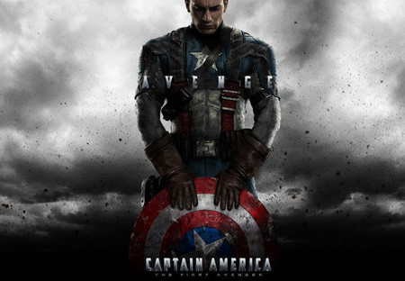

presentacion sobre personajes y sus caracteristicas mas relevantes
nombre y apellido:vlentino machado
edad: 17
nacimiento:18/03/2005
mi pagina es sobre peliculas de marvel y series
marc spector
Marc Spector es un antiguo Marine de los Estados Unidos, agente de la Agencia Central de Inteligencia y mercenario que padece del trastorno de identidad disociativo. En su infancia, Spector comenzó a padecer de la enfermedad debido al maltrato de su madre, Wendy Spector, creando a su personalidad alterna, Steven Grant.
poderes
Marc Spector, cree fielmente que su poder y fuerza incrementa por la influencia de Khonshu. Sin embargo, dicha hipótesis no ha sido confirmado, aunque, el caballero de la luna sí incrementa su poder, tanto así, que logra levantar alrededor de 2 toneladas de peso
steve Grant
Al primero que conocimos fue a Steven Grant, el empleado de un museo que tiene que dormir amarrado a la cama por miedo a lo que le pueda pasar mientras duerme (está convencido de que es sonámbulo), pero más tarde nos presentan a Mar Spector, un mercenario que vive en el cuerpo de Steven y es quien se convierte en Moon .
konshu
Jonsu (antiguo egipcio: ḫnsw; también transcrito como Chonsu, Khensu, Khons, Chons o Khonshu) es el antiguo dios egipcio de la Luna. Su nombre significa "viajero", y esto puede relacionarse con el viaje nocturno percibido de la Luna a través del cielo. Junto con Thoth marcó el paso del tiempo.
Arthur Harrow
Raoul Bushman, el enemigo más antiguo de Moon Knight en los cómics de Marvel hizo su primera aparición en noviembre de 1980 y es un mercenario que combatió junto a su némesis en Sudán antes de convertirse en su enemigo principal.
Kevin Feige (Boston, 2 de junio de 1973)1 es un productor de cine estadounidense que se unió a Marvel Studios en el año 2000 y ha participado en todas sus producciones cinematográficas. En 2007 fue nombrado presidente de producción.2 Sus películas han recaudado un total de 20 000 millones de dólares en todo el mundo.3 Feige es miembro del Gremio de Productores de América. En 2019, la película Black Panther en la que participó como productor fue nominada en los Óscar a Mejor Película, siendo esta la primera película de superhéroes en recibir una nominación a Mejor Película, así como la primera película en el Universo cinematográfico de Marvel en ganar un Premio de la Academia. A partir de octubre de 2019 es Jefe Creativo de Marvel Entertainment lo que significa que las filiales de Marvel TV y Marvel Family Entertainment (de animación) responderán ante él. Avengers: Endgame, película en la que también fue productor logró el récord de la película más taquillera de todos los tiempos en 2019.
producciones conocidas
capitan america

sinopsis
Nacido durante la Gran Depresión, Steven Rogers creció como un joven frágil en una familia pobre. Horrorizado por el metraje de los nazis en Europa, Rogers se preparó para alistarse en el ejército. Sin embargo, debido a su fragilidad y enfermedad, fue rechazado
black panther
descripcion
es el primer superhéroe de tez negra de la historia de Marvel y se debe destacar que el personaje fue creado con anterioridad al Partido Pantera Negra, el cual fue fundado en octubre del mismo año. Es el rey y protector de la ficticia nación africana de Wakanda
capitan america civil war
trama
Steve Rogers dirige el nuevo equipo de los Vengadores en misiones cuyo fin es salvaguardar la humanidad. Pero las misiones producen daños colaterales que fuerzan la intervención y supervisión del gobierno, Steve, en un giro sorprendente, rechaza la supervisión, a la que no se opone Tony Stark